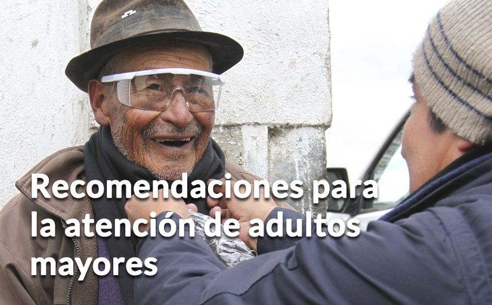

Explícales lo que está pasando con el Volcán Cotopaxi, teniendo en cuenta su estado de salud y transmitiéndoles seguridad.
Explícales lo que está pasando con el Volcán Cotopaxi, teniendo en cuenta su estado de salud y transmitiéndoles seguridad.|  |
PROCURA MANTENERLOS AL TANTO DE LO QUE OCURRE:
Explícales lo que está pasando con el Volcán Cotopaxi, teniendo en cuenta su estado de salud y transmitiéndoles seguridad.
Coméntales cómo actuará la familia ante una erupción, dónde estará él o ella y quién los cuidará.
Si deben evacuar, explícales por qué razón deben hacerlo y dónde deberá permanecer por su seguridad.
Explícales que, de darse una erupción, es posible que la familia esté separada. Coméntale qué hará cada uno y quién cuidará de él o ella en este proceso.
Coméntales que está listo su maletín o bolso de emergencia con los artículos preferidos y con cosas básicas para que esté bien. Antes, procura que él decida qué desea incluir.
MALETÍN DE EMERGENCIA SUGERIDO PARA ADULTOS MAYORES
Agua envasada.
Galletas, enlatados y comida no perecible de su preferencia.
Abrigo o frazada.
Pañales para adulto mayor.
Una mudada de ropa.
Medicinas habituales y un indicativo de cuánto, cómo y cuándo debe ingerirlas.
Un identificativo con el número telefónico de uno o varios familiares.
TODOS LOS ADULTOS MAYORES CUENTAN CON ATENCIÓN ESPECIAL Y PRIORITARIA DEL MIES
Cuidados de Salud.
Soporte psicológico.
Plan de evacuación.
Suministro de medicamentos para enfermedades crónicas y organización de vivienda temporal.